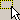
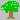
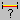

From the Startup Dialog, to launch with Terrain:
Press "OK". The terrain will now load, which may take up to a minute. Messages in the status bar will inform you of the loading progress.
| Select - Use the mouse point to move the 3D cursor on the terrain, selecting and deselecting objects. You can also right-click for a pop-up menu of actions for the selected objects. See Working with Culture Objects for more information. | ||
|  | Select Box - This mode lets you select Abstract Point elements by dragging a box on the screen. | |
| Select And Move - In addition to selecting objects, you can move them by dragging. | ||
| Move Objects - Similar to the Select and Move mode, except that you can only move objects, so there is no chance of accidentally selecting or deselecting objects you want to move. | ||
| Fences - Opens the Linear Structures dialog for creating features like fences, walls and hedges. Click to add points on the terrain, right-click to close the feature. | ||
| Buildings - Click on the terrain to create buildings. Each click defines a corner of the building footprints, right-click finishes definition. | ||
| Routes - Opens the Routes dialog for creating utility routes, specifically electrical transmission lines. | ||
|  | Plants - Opens the Plants dialog for creating plants by clicking on the terrain. See Working with Culture Objects for more information. | |
| Points - Use the mouse to click on the terrain to create labeled points ("placemarks"). The first time you select this mode, it will ask you for the style you want (Color, Size, etc.). The points are generated in a new Abstract Layer, which you can view and save from the Layers Dialog. | ||
| Instances - Opens the Instances dialog for creating 3D model instances by clicking on the terrain. | ||
| Vehicles - Opens the Vehicles dialog for creating vehicle models by clicking on the terrain. Vehicles can be selected, moved and rotated just like instances. | ||
| Navigate - Use the mouse to fly over the terrain. See using the mouse to navigate. | ||
|  | Measure Distances - Opens the Distance dialog. Drag a line on the terrain to get information about the distance measured several ways. |